References are AI-generated rasters: they guide layout, rhythm, palette and hierarchy; the written spec wins.
Reviewer: Claude (T18 agent) — documented S01 behaviour at AX5: the hero shrinks first to a short band, the lockup drops to 40 pt, the panel scrolls and the headline wraps without truncation; no reference at this size.
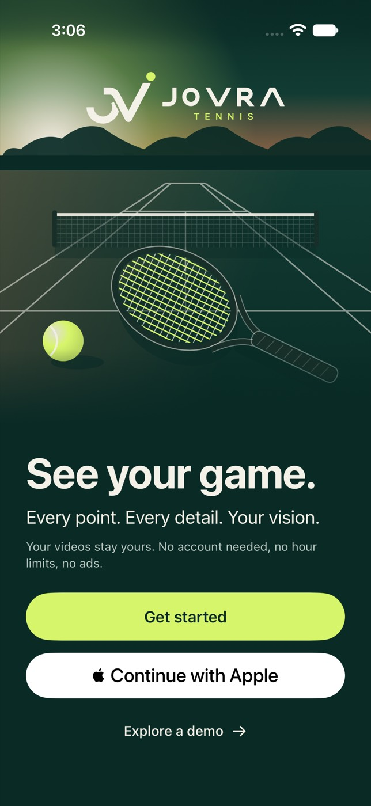
Reviewer: Claude (T18 agent) — identical to light by design (S01 is forest in both appearances); matches.
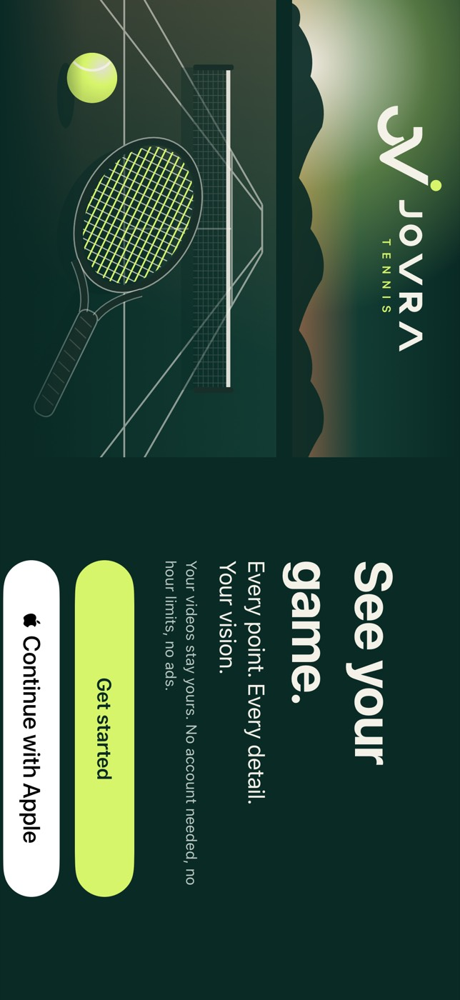
Reviewer: Claude (T18 agent) — documented S01 landscape layout, no reference: hero on the leading 45 %, the panel scrolls on the trailing 55 %; the textClipped audit passes.
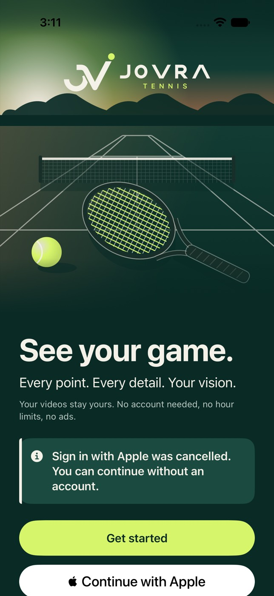
Reviewer: Claude (T18 agent) — documented state, no reference: a cancelled Apple sign-in shows the plain info banner above the buttons and Get started stays enabled (ticket wording "Cancel or failure returns to Welcome with a plain message" wins over S01's "no message" row).
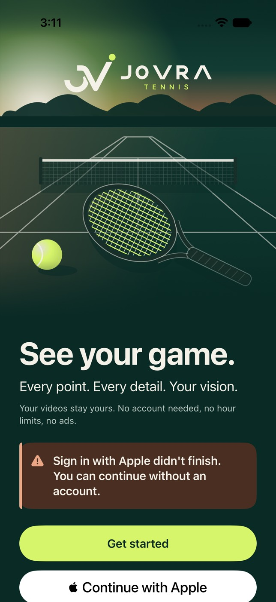
Reviewer: Claude (T18 agent) — documented S01 state, no reference: the attention banner "Sign in with Apple didn't finish. You can continue without an account." never blocks Get started.
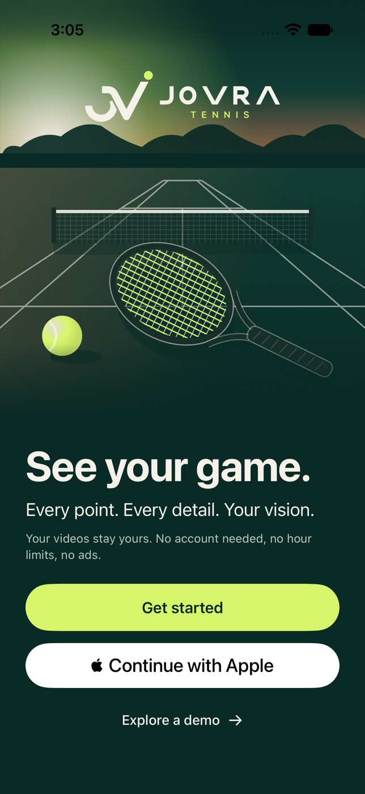
Reviewer: Claude (T18 agent) — matches the reference's hierarchy: lockup over a full-bleed hero, "See your game." display headline, subline, chartreuse Get started, Continue with Apple, understated Explore a demo with arrow; forest in both appearances with a light status bar. Documented deviations: vector CourtHeroArt replaces the uncleared photograph (no marks on ball or racket), Apple's own white system button replaces the drawn outline, and the P0-18 promise line is added.
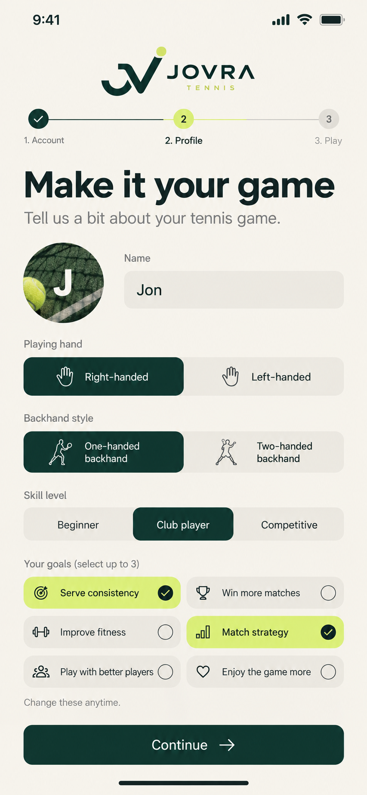
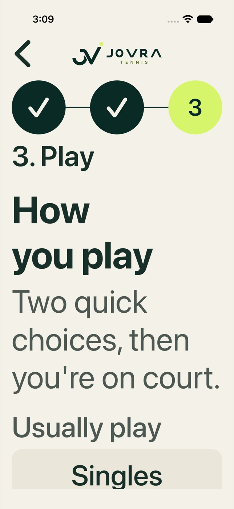
Reviewer: Claude (T18 agent) — step 3 at AX5: the actions follow the content instead of a pinned bar that would cover most of the screen; nothing truncates.
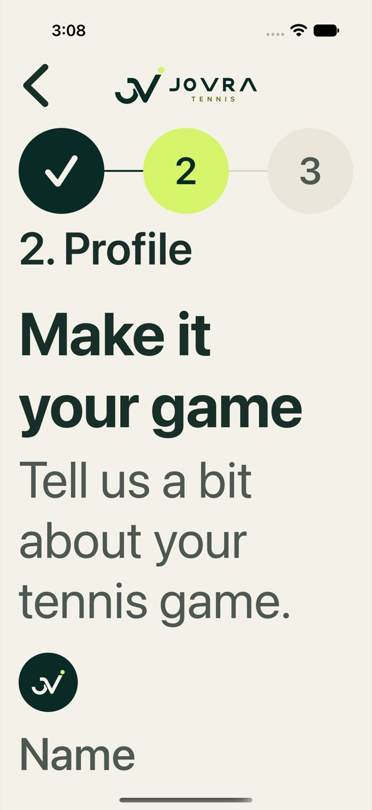
Reviewer: Claude (T18 agent) — documented S02 accessibility layout, no reference: segments and goal chips stack in one column, the avatar shrinks to 64 pt, the rail shows one "2. Profile" line, and the actions end the page instead of pinning over it.
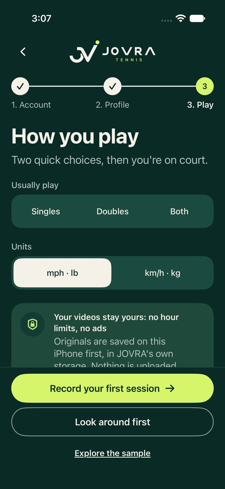
Reviewer: Claude (T18 agent) — step 3 in dark; colour roles switch, cards keep their tints; matches the light pairing.
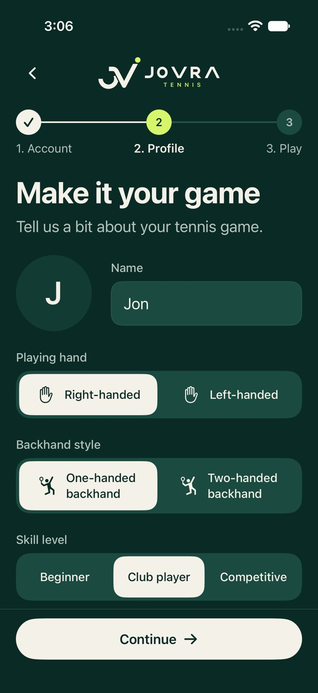
Reviewer: Claude (T18 agent) — the same layout on the forest background with colour roles switched (selected segments ivory on forest); matches the light pairing.
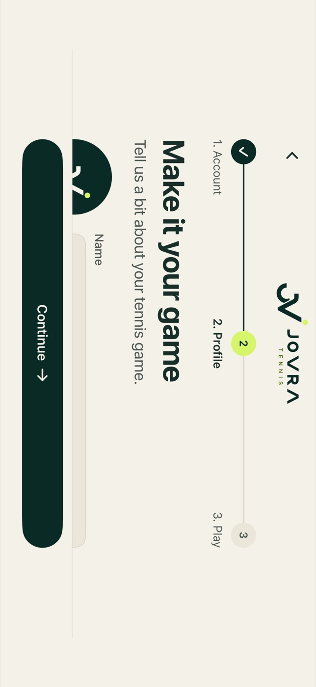
Reviewer: Claude (T18 agent) — documented S02 landscape: one readable column (560 pt max) centred; the textClipped audit passes.
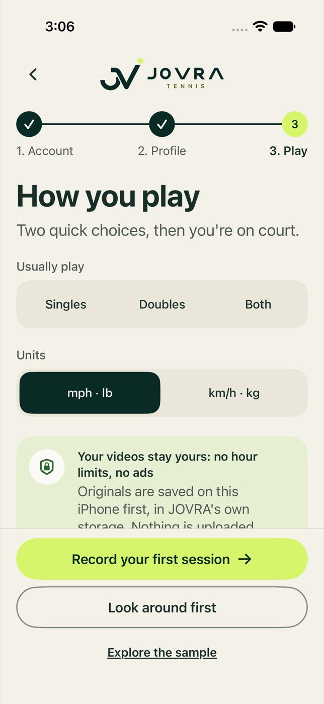
Reviewer: Claude (T18 agent) — step 3 "Play" is specified in S02 (the reference only names it): "How you play", Usually play and Units, the own-your-footage promise with where originals live, the iCloud device-backup default and how recording asks for permissions; Record your first session / Look around first / Explore the sample.
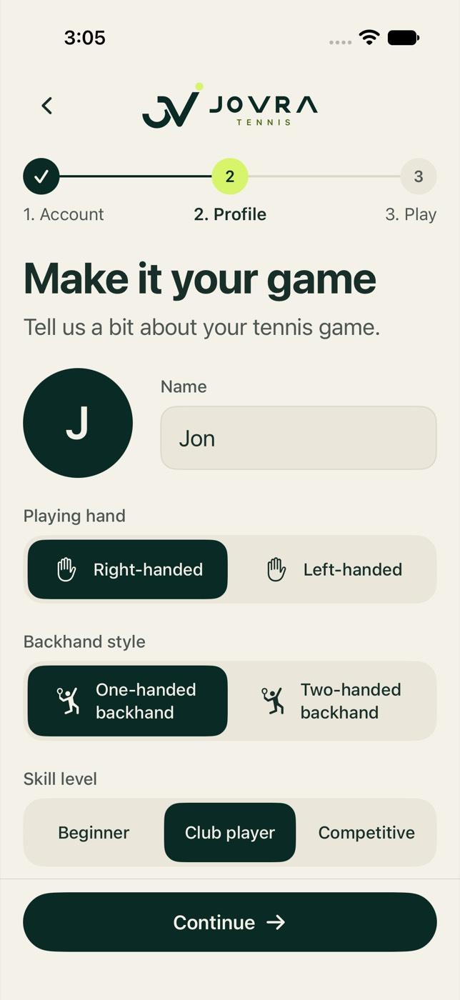
Reviewer: Claude (T18 agent) — matches the reference: small lockup, StepRail with 1 done / 2 current (chartreuse) / 3 upcoming and labels, "Make it your game" and subtitle, J avatar with Name field, icon ChoiceSegments for hand and backhand, Skill level segments, goal chips, forest Continue with arrow in a pinned bar. Documented deviations: the avatar shows the initial on forest (no court photo, so no Photos access), nothing is preselected (the test made the reference's choices), and a Back control sits top leading.